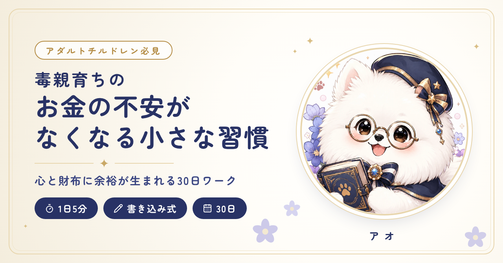

- タイトルを選んでコピーし、noteのタイトル欄に貼る。見出し画像を設定する。
- 本文（無料部分）の「本文をコピー」を押し、noteの本文欄に貼る。見出し・太字・箇条書きはそのまま入ります。
- 冒頭の6段落を選んで、noteの中央寄せにする（貼り付けで中央寄せが外れた場合）。
- 本文中の【画像①〜⑤】の行に、下の「画像をコピー」で画像を貼る（または＋ボタン →「画像」）。入れたら【】の行は消す。
- 本文の最後（出典の下）に有料ラインを置き、その下に有料エリアをコピーして貼る。PDFを添付する。
- 【要確認】の行を直すか消してから、価格を決めて公開する。最後に「公開前チェック」を確認。
見出し画像 1280×670

見出し画像は、ファイルを選んで設定する必要があります。画像ファイルは、Claudeとのチャットに送ってあります（ファイルのカードから保存できます）。
ここに note の有料ラインを置く
有料エリア 有料ラインの下に貼る
画像 本文の【画像○】の位置に入れる
「画像をコピー」を押して、noteの本文の【画像○】の行に貼り付けてください（パソコンはCtrl+V、Macは⌘+V）。貼れない場合は、Claudeとのチャットに送った画像ファイルを保存して、noteの＋ボタン→「画像」から入れてください。